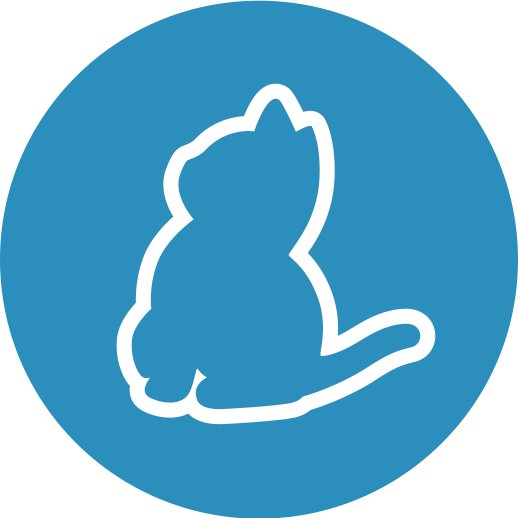

SAFE Stack
current state

Tomasz Heimowski @theimowski


Plan
- Brief intro
- Where are we today
- How we got here
- Template deep dive
- Towards version 1.0
- What's next
Brief intro
- What is SAFE?
- Quick Demo

???


CATS
(Typical MS Stack)


big picture
- Combines several OSS projects
- F# end-to-end
- Type-SAFE
- Cloud-ready
- Flexible

S for Saturn

- Web server
- ASP.NET Core, Kestrel
- MVC pattern

A for Azure

- Cloud provider

F for Fable

- F# to JavaScript compiler
- Babel JS

E for Elmish

- UI library
- inspired by Elm

Quick Demo
- Creating from scratch
- Debugging both Client & Server

Watch full demo from F# eXchange '18 Video
Where are we today
Documentation

NuGet downloads

Microsoft involvement

Technology Radar

Commercial support

Podcasts
Events
Conference talks
- Lambda Days 2018, Kraków, Poland
- FableConf 2018, Berlin, Germany
- F(by) 2019, Minsk, Belarus
- ...
Events
Workshops
- Open F# 2018, San Francisco, USA
- SAFE Hackday 2018, Birmingham, UK
- DevDays 2019, Vilnius, Lithuania
- ...
Events
Local Meetups
- Bristol, UK
- Vienna, Austria
- Prague, Czech Republic
- ...
How we got here
Fable
- Stable F# to JS compilation
- Reusing F# sources between front and back end
Announcing SAFE
- FableConf '17
- Compositional IT Blog entry
SAFE projects on GitHub
SAFE template
dotnet new -i SAFE.Templatedotnet new SAFEfake build --target run
Promotion
- https://twitter.com/safe_stack
- All the events
- Companies & community
Template Deep dive
Template options
- Server
- Deploy
- Layout
- JS Deps
- Communication
- Pattern
Template options
Server

- Saturn
- Giraffe
- Suave
Template options
Deploy


- Azure AppService
- Docker
- Google Cloud AppEngine
- Google Cloud Kubernetes Engine
Template options: layout (Fulma)


Template options
JS Deps

- Yarn
- NPM
Template options
Communication
Template options
Pattern
Template development
-
Integration tests
- Property-based for all options
- Building new template
- Checking HTTP response
-
Pinning dependencies
- Variance in paket.dependencies
- Automated update
Towards version 1.0
1.0 objectives
- stable dependencies
- stable CLI interface
- stable WebPack configuration
- better adoption
1.0 release
What's next
- Support & fixing issues
-
Extending template:
- other platforms (mobile, desktop, iot?)
- tests
- more deployment options
- Keeping SAFE project "up to date"
Thank you!
Slides available at